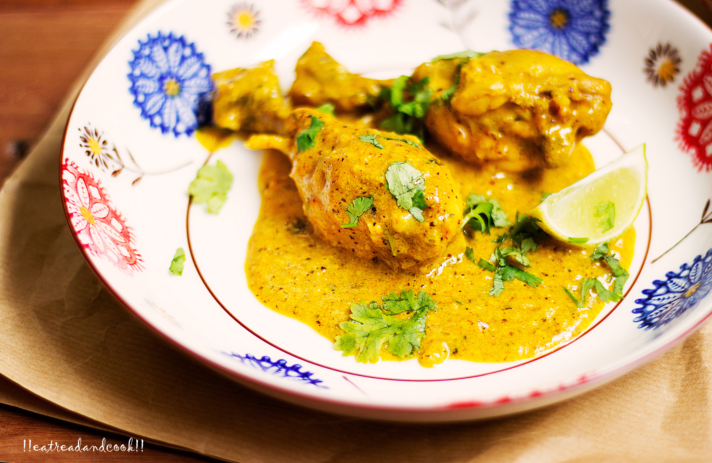

Kasundi murgi

Description
It is a spicy and tangy chicken curry that is prepared with green mango and mustard sauce. The chicken is marinated with garlic paste, turmeric powder, Kashmiri red chili powder, green chili, salt, and mustard oil. Mango mustard sauce is then added to the marinated chicken and mixed well. The dish is cooked on medium heat until the chicken is tender and the sauce thickens. It is typically served hot with steamed rice or roti.
Ingredients
- 1 kg chicken on bone
- ½ cup thick yogurt
- 3 tbsp kasundi
- 6 garlic cloves (minced)
- 1 tsp turmeric powder
- 1 tsp red chilli powder
- Salt
- 2 tbsp mustard oil
- A handful of fresh coriander leaves
Steps
- Heat oil in a kadai and add the chicken pieces to them.
- Sprinkle some salt and sear the chicken pieces for 2-3 minutes or until they are nicely golden.
- Add the garlic paste and stir to mix.
- Cook for a minute or two.
- Switch the flame to low and add the whisked yogurt, kasundi, turmeric powder, red chilli powder and salt.
- Stir to mix everything properly.
- Cover and cook for 10 minutes.
- Open the lid and add 2 cups of water.
- Cover and continue cooking until the chicken pieces are fork tender.
- Taste and adjust the seasonings.
- Simmer until the gravy thickens and the oil starts to separate.
- Finish off with some freshly chopped coriander leaves.
- Switch off the flame and serve hot with some plain hot rice.